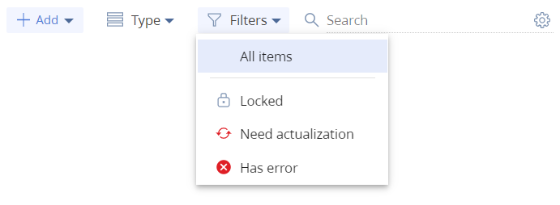

Раздел Конфигурация (Configuration) предназначен для управления конфигурационными элементами, при помощи которых реализована функциональность системы.
Используя инструменты раздела Конфигурация (Configuration) можно выполнять следующие действия:
- Управлять пакетами, из которых состоит конфигурация, а также их содержимым.
- Расширять и модифицировать функциональность Creatio.
- Организовывать работу с хранилищами системы контроля версий.
- Управлять разработкой функциональности и переносом изменений между рабочими средами.
Переход в раздел Конфигурация (Configuration)
В Creatio реализованы следующие способы перехода в раздел Конфигурация (Configuration):
- Через дизайнер системы по кнопке
 . В блоке Конфигурирование разработчиком (Admin area) перейдите по ссылке Управление конфигурацией (Advanced settings).
. В блоке Конфигурирование разработчиком (Admin area) перейдите по ссылке Управление конфигурацией (Advanced settings). - По ссылке [Адрес приложения Creatio]/0/ClientApp/#/WorkspaceExplorer. Например, http://my.сreatio.com/0/ClientApp/#/WorkspaceExplorer.
- По алиасу /we. Например, http://my.сreatio.com/0/we.
- По алиасу /conf. Например, http://my.сreatio.com/0/conf.
- По алиасу /dev. Например, http://my.сreatio.com/0/dev.
Раздел Конфигурация (Configuration) будет открыт в новой вкладке.
Переключение между версиями интерфейса раздела Конфигурация (Configuration)
По умолчанию раздел Конфигурация (Configuration) отображается в интерфейсе 5.Х. Для Creatio версии 7.16.3 реализована возможность отображения раздела в интерфейсе 7.Х.
Чтобы отобразить раздел в интерфейсе 7.Х, необходимо включить опцию дополнительной функциональности NewConfigurationSettingsUI, которая переключает пункт меню Управление конфигурацией (Advanced settings) дизайнера системы.
Для включения опции NewConfigurationSettingsUI необходимо выполнить следующие действия:
- Перейти на страницу дополнительной функциональности FeaturesPage по ссылке [Адрес приложения Creatio]/0/ViewModule.aspx#BaseSchemaModuleV2/FeaturesPage. Например, http://my.creatio.com/0/Nui/ViewModule.aspx#BaseSchemaModuleV2/FeaturesPage.
- Проверить значение опции NewConfigurationSettingsUI. Опция должна быть включена. Если опция отключена, измените ее значение с помощью переключателя и сохраните изменения нажатием Сохранить изменения (Save changes).
Управление доступом к разделу Конфигурация (Configuration)
По умолчанию доступ к основным системным операциям есть только у администраторов системы. Но его можно настроить для определенных пользователей или групп пользователей. Чтобы предоставить доступ к разделу Конфигурация (Configuration), выполните следующие действия:
- Перейдите в дизайнер системы по кнопке . В блоке Пользователи и администрирование (Users and administration) перейдите по ссылке Права доступа на операции (Operation permissions).
- Выберите системную операцию Доступ к разделу "Конфигурация" (Access to "Configuration" section) (код CanManageSolution).
- На детали Доступ к операции (Operation permission) нажмите
 и укажите получателя прав. Запись появится на детали в колонке Уровень доступа (Access level) со значением Да (Yes), а пользователи, входящие в указанную роль, получат доступ к системной операции Доступ к разделу "Конфигурация" (Access to "Configuration" section).
и укажите получателя прав. Запись появится на детали в колонке Уровень доступа (Access level) со значением Да (Yes), а пользователи, входящие в указанную роль, получат доступ к системной операции Доступ к разделу "Конфигурация" (Access to "Configuration" section).
Описание интерфейса раздела Конфигурация (Configuration)
Интерфейс раздела Конфигурация (Configuration), который состоит из нескольких функциональных областей.
Панель инструментов
На панели инструментов расположены следующие элементы:
- кнопка Закрыть (Close) — закрыть вкладку с разделом Конфигурация (Configuration).
- кнопка Компилировать (Compile) — запуск компиляции конфигурации. Нажатие на кнопку запускает компиляцию изменений в конфигурации. Выбор пункта Перекомпилировать все (Compile all) в выпадающем списке кнопки Компилировать (Compile) запускает компиляцию конфигурации всех без исключения конфигурационных элементов. В результате будут обновлены исполняемые файлы и статический контент будет выгружен в каталог ...\Terrasoft.WebApp\conf. После завершения компиляции пользователь получит уведомление о ее завершении и изменения вступят в силу для пользователей, работающих в текущей конфигурации.
- выпадающий список Действия (Actions) — содержит перечень действий раздела Конфигурация (Configuration). Действия разделены на несколько групп.
Действия раздела Конфигурация (Configuration) включают в себя следующие группы:
- Разработка в файловой системе (File system development mode) — действия, связанные с режимом разработки в файловой системе.
- Хранилища SVN (SVN repositories) — действия по работе с хранилищами системы контроля версий.
- Актуализировать элементы (Actualize items) — действия по актуализации конфигурационных элементов.
- Исходный код (Source code) — действия по работе с исходным кодом.
При наведению курсора на название группы, отображается подсказка по включению режима.
Группа действий Разработка в файловой системе (File system development mode) (1) содержит следующие пункты:
- Выгрузить все пакеты в файловую систему (Download packages to file system) — загружает пакеты из базы данных приложения в каталог ...\Terrasoft.WebApp\Terrasoft.Configuration\Pkg.
- Обновить пакеты из файловой системы (Update packages from file system) — загружает пакеты из каталога ...\Terrasoft.WebApp\Terrasoft.Configuration\Pkg в базу данных.
Группа действий Хранилища SVN (SVN repositories) (2) содержит следующие пункты:
-
Открыть список хранилищ (Open list of repositories) — открывает новую вкладку Список хранилищ (List of repositories), при помощи которой можно создавать, настраивать и удалять ссылки на доступные хранилища системы контроля версий.
Группа действий Актуализировать элементы (Actualize items) (3) содержит следующие пункты:
- Обновить структуру БД для требующих обновления (Update DB structure where it is needed) — обновляет структуру базы данных для конфигурационных элементов, которые требуют обновления. После завершения обновления структуры БД пользователь в диалоговом окне получит уведомление.
- Установить SQL сценарии для требующих установки (Install SQL scripts where it is needed) — установить SQL сценарии, которые требуют установки. После завершения установки SQL сценариев пользователь в диалоговом окне получит уведомление.
- Установить данные для требующих установки (Install data where it is needed) — установить данные, которые требуют установки. После завершения установки данных пользователь в диалоговом окне получит уведомление.
Группа действий Исходный код (Source code) (4) содержит следующие пункты:
-
Сгенерировать для измененных (Generate for modified schemas) — генерирует исходный код для схем, которые были изменены в текущей конфигурации.
-
Сгенерировать для требующих генерации (Generate where it is needed) — генерирует исходный код для всех схем, которые требуют генерации исходного кода.
-
Сгенерировать для всех схем (Generate for all schemas) — генерирует исходный код для всех без исключения схем текущей конфигурации. Эта операция может занять длительное время (больше 10 минут).
Область работы с пакетами
Область работы с пакетами состоит из следующих элементов:
- строка поиска Поиск по пакетам (Search by package) — выполнить поиск пакета по его имени.
- кнопка
 — создать новый пакет. При нажатии на кнопку будет отображено окно для создания нового пакета, в котором можно задать название и описание пакета, добавить зависимости, а также указать репозиторий.
— создать новый пакет. При нажатии на кнопку будет отображено окно для создания нового пакета, в котором можно задать название и описание пакета, добавить зависимости, а также указать репозиторий. - группа Все пакеты (All packages) — содержит перечень всех пакетов приложения в алфавитном порядке. Вверху перечня отображаются измененные пакеты и пакеты, доступные для редактирования. При выборе группы Все пакеты (All packages) конфигурационные элементы всех пакетов приложения в алфавитном порядке будут отображены в рабочей области раздела Конфигурация (Configuration). При выборе одного пакета группы Все пакеты (All packages) в алфавитном порядке будут отображены конфигурационные элементы текущего пакета.
 — предустановленные пакеты (недоступны для изменения).
— предустановленные пакеты (недоступны для изменения). — пользовательские пакеты, созданные текущим пользователем и доступны к изменению.
— пользовательские пакеты, созданные текущим пользователем и доступны к изменению. возле имени пакета и находятся вверху перечня пакетов группы
возле имени пакета и находятся вверху перечня пакетов группы При нажатии на  в строке с названием пакета будет отображено меню, которое состоит из следующих пунктов:
в строке с названием пакета будет отображено меню, которое состоит из следующих пунктов:
- Экспортировать (Export) — выгрузить пакет в zip-архив.
- Удалить (Delete) — удалить пакет. Неактивна для предустановленных пакетов.
- Обновить из хранилища (Update from repository) — обновление пакета из подключенного хранилища системы контроля версий.
- Зафиксировать в хранилище (Commit to repository) — фиксация пакета в подключенном хранилище системы контроля версий.
- Свойства (Properties) — открыть страницу Свойства пакета (Package properties). Страница будет открыта в новой вкладке. На странице можно настроить зависимости текущего пакета, просмотреть системную информацию (кто создал и отредактировал пакет, даты создания и изменения, уникальный идентификатор, первичный ключ пакета в таблице базы данных). Также открыть свойства пакета можно двойным кликом по имени пакета.
Интерфейс страницы Свойства пакета (Package properties) состоит из нескольких функциональных областей.
Рабочая область
В рабочей области раздела осуществляется основная работа с конфигурационными элементами. Рабочая область содержит следующие элементы:
- панель инструментов — позволяет добавлять и настраивать отображение конфигурационных элементов в реестре раздела, а также выполнить поиск.
- реестр раздела, который содержит перечень конфигурационных элементов.
Панель инструментов
Панель инструментов предназначена для добавления и настройки отображения конфигурационных элементов в реестре раздела, а также выполнения поиска.
Панель инструментов содержит следующие элементы:
- выпадающий список Добавить (Add) — выбор конфигурационного элемента, который необходимо добавить.
Конфигурационные элементы для добавления

- выпадающий список Тип (Type) — выбор типа конфигурационных элементов, которые необходимо отобразить в реестре раздела.
Типы конфигурационных элементов для отображения

- выпадающий список Фильтры (Filters) — выбор состояния конфигурационных элементов, которые необходимо отобразить в реестре раздела.
Состояния конфигурационных элементов для отображения
- строка поиска Поиск (Search) — выполнить поиск конфигурационного элемента по его имени в реестре раздела. По нажатию на можно задать дополнительные параметры поиска. Поиск выполняется в рамках выделенного пакета. Чтобы выполнять поиск по всем конфигурационным элементам, необходимо перейти в группу Все пакеты (All packages).
Реестр раздела
Реестр раздела содержит перечень конфигурационных элементов. Данные представлены в виде таблицы, которая состоит из следующих колонок:
- Название (Name) — имя конфигурационного элемента, которое было задано при его создании. Все конфигурационные элементы отсортированы в алфавитном порядке.
- Заголовок (Title) — заголовок конфигурационного элемента.
- Статус (Status) — состояние конфигурационного элемента. Содержит данные с выпадающего списка Фильтры (Filters).
- Тип (Type) — тип конфигурационного элемента, который был выбран при создании конфигурационного элемента в выпадающем списке Добавить (Add).
- Объект (Object) — объект, с которым связаны привязываемые к пакету данные. Колонка заполняется только для конфигурационного элемента Данные (Data).
- Дата изменения (Modified on) — дата изменения текущего конфигурационного элемента.
- Пакет (Package) — название пакета, который содержит текущий конфигурационный элемент.
При нажатии на в строке конфигурационного элемента будет отображено меню, которое зависит от значения колонки Тип (Type).
Меню конфигурационных элементов SQL сценарий (SQL script) и Данные (Data) содержит следующие пункты:
- Удалить (Delete) — удалить конфигурационный элемент. Неактивно для конфигурационных элементов предустановленных пакетов.
- Установить (Install) — установить конфигурационный элемент (для элемента SQL сценарий (SQL script) выполнится установка в базу данных, для элемента Данные (Data) выполнится установка данных для объекта колонки Объект (Object)).
- Отменить изменения (Discard changes) — отменить внесенные изменения. Пункт доступен если пакет с конфигурационным элементом подключен к репозиторию.
- Свойства (Properties) — открыть окно свойств конфигурационного элемента.
Меню конфигурационного элемента Внешняя сборка (Reference assembly) содержит следующие пункты:
- Удалить (Delete) — удалить конфигурационный элемент. Неактивно для конфигурационных элементов предустановленных пакетов.
- Отменить изменения (Discard changes) — отменить внесенные изменения. Пункт доступен если пакет с конфигурационным элементом подключен к репозиторию.
- Свойства (Properties) — открыть окно свойств конфигурационного элемента.
Меню конфигурационного элемента Объект (Object) содержит следующие пункты:
- Изменить процесс (Edit process) — открыть объект для редактирования. Если объект был создан третьими лицами, будет отображено соответствующее уведомление.
- Экспортировать (Export) — скачать объект. Объект будет скачан в формате *.md.
- Удалить (Delete) — удалить конфигурационный элемент. Неактивно для конфигурационных элементов предустановленных пакетов.
- Обновить структуру БД (Update database structure) — обновить структуру базы данных для текущего объекта.
- Сгенерировать исходный код (Generate source code) — сгенерировать исходный код текущего конфигурационного элемента. Будет выполнено если процесс содержит компилируемые элементы.
- Отменить изменения (Discard changes) — отменить внесенные изменения. Пункт доступен если пакет с конфигурационным элементом подключен к репозиторию.
- Свойства (Properties) — открыть окно свойств конфигурационного элемента.
Меню конфигурационных элементов Клиентский модуль (Client module), Исходный код (Source code), Кейс (Case) и Маркетинговая кампания (Marketing campaign) содержит следующие пункты:
- Экспортировать (Export) — скачать конфигурационный элемент. Конфигурационный элемент будет скачан в формате *.md.
- Удалить (Delete) — удалить конфигурационный элемент. Неактивно для конфигурационных элементов предустановленных пакетов.
- Отменить изменения (Discard changes) — отменить внесенные изменения. Пункт доступен если пакет с конфигурационным элементом подключен к репозиторию.
- Свойства (Properties) — открыть окно свойств конфигурационного элемента.
Меню конфигурационных элементов Бизнес-процесс (Business-process) и Действие процесса (User task) содержит следующие пункты:
- Экспортировать (Export) — скачать конфигурационный элемент. Конфигурационный элемент будет скачан в формате *.md.
- Удалить (Delete) — удалить конфигурационный элемент. Неактивно для конфигурационных элементов предустановленных пакетов.
- Сгенерировать исходный код (Generate source code) — сгенерировать исходный код текущего конфигурационного элемента. Пункт доступен если элементы бизнес-процесс содержат исходный код.
- Отменить изменения (Discard changes) — отменить внесенные изменения. Пункт доступен если пакет с конфигурационным элементом подключен к репозиторию.
- Свойства (Properties) — открыть окно свойств конфигурационного элемента.
Выполнить удаление конфигурационного элемента можно нажатием на . Данная кнопка появляется при наведении курсора мыши на запись реестра раздела Конфигурация (Configuration) только для конфигурационных элементов, которые были созданы текущим пользователем.